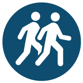

Walkability

Our Grade: C+ As our region’s principal city, Baltimore has an average Walk Score of 66 on a 0-100 scale. WalkScore.com considers this score as “Somewhat Walkable”.
Definition: This indicator shows how easy and attractive it is to walk in a city. It uses scores given to each U.S. city by walkscore.com which measures the number of destinations such as schools, parks, restaurants, grocery stores and other common destinations that are in close proximity to a residence and averages those scores across an entire city.
Reason: This is an indicator of whether our transportation system gives you choices. In some places it’s easy to walk to buy milk or to get from the train station to your workplace. On the other hand, some places are built in a way that leaves driving as the only way to get around. Having more walkable places in the region gives you the option of doing some errands without needing to drive, promotes a healthy lifestyle, and leaves roadway capacity for other trips.
Who's Doing It Better?: San Francisco. San Francisco earns a Walk Score of 84 which indicates that most errands can be accomplished on foot.